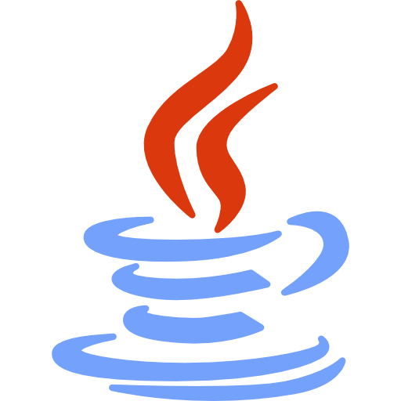

Quién soy?
Soy Iñigo Eguiluz Mateos, estudiante del doble grado en Ciencia de Datos e Inteligencia Artificial e Ingeniería Informática en la Universidad de Deusto. Me apasiona el mundo de la tecnología, la innovación y cómo los datos pueden transformar la manera en que entendemos y mejoramos la sociedad. Actualmente estoy desarrollando proyectos en áreas como machine learning, sistemas inteligentes y aplicaciones prácticas de la inteligencia artificial.
Hobbies
En mi tiempo libre disfruto del running, el gimnasio y los retos de lógica como el cubo de Rubik. También soy un gran aficionado al cine, que me inspira y me ayuda a desconectar. Estas aficiones me aportan disciplina, constancia y creatividad, cualidades que aplico también en mis proyectos.
- Gimnasio
- Running
- Cine
Estudios
-
Colegio Vizcaya
Formación escolar completa. Desarrollo de base científica, trabajo en equipo y hábitos de estudio.
-
Universidad de Deusto
Ciencia de Datos e Inteligencia Artificial + Ingeniería Informática. Proyectos de ML, IA aplicada y software.

Technical Skills
Lenguajes de programación
 Python
Python R
R- Java
- C
 C++
C++- SQL
Herramientas y tecnologías
 ML Libraries (Sklearn, Pandas, Numpy, cuML, ...)
ML Libraries (Sklearn, Pandas, Numpy, cuML, ...) DL Libraries (PyTorch, ...)
DL Libraries (PyTorch, ...)- Data Visualization (Matplotlib, Seaborn, ...)
- DB (MySQL, PostgreSQL, MongoDB, ...)
- Big Data (Hadoop, Spark, ...)
- Cloud (AWS, Azure, ...)
 Version Control (Git, GitHub)
Version Control (Git, GitHub)
Soft Skills
- Pensamiento crítico y analítico
- Resolución de problemas
- Comunicación efectiva
- Trabajo en equipo
- Adaptabilidad
Filosofía personal
Creo firmemente en el poder de la tecnología como motor de cambio positivo. Para mí, la inteligencia artificial, la ciencia de datos y la informática no son solo herramientas, sino oportunidades para aportar soluciones innovadoras a los retos sociales, medioambientales y económicos de nuestro tiempo. Mi filosofía se basa en aprender de forma constante, afrontar los problemas con creatividad y trabajar en equipo para construir un futuro más sostenible y humano.